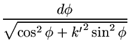
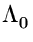

| F3*(k', p) = ; SPMthinsp; d(k'2 ; SPMgt; 0, p |
| Author(s): K.S. Kölbig | Library: MATHLIB |
| Submitter: | Submitted: 07.06.1992 |
| Language: Fortran | Revised: |
Function subprograms RELI1C, RELI2C, RELI3C and DELI1C, DELI2C, DELI3C calculate the complete elliptic integrals of the first, second and third kind, respectively.
Function subprograms RELIGC and DELIGC calculate a general complete elliptic integral.
Function subprograms RELIKC, RELIEC and DELIKC, DELIEC calculate the complete elliptic integrals K(k) and E(k).
On CDC and Cray computers, the double-precision versions DELI1C etc. are not available.
Mainly for reasons of numerical stability, the algorithms are based on the following definitions:
First kind:
| F1*(k') = (k'2 ; SPMgt; 0). |
| F2*(k', a, b) = ; SPMthinsp; d(k'2 ; SPMgt; 0). |
| F3*(k', p) = ; SPMthinsp; d(k'2 ; SPMgt; 0, p |
Note that F1*(k') = F2*(k', 1, 1) = F3*(k', 1). For p ; SPMlt; 0, the integral F3* is defined by its principal value.
The general integral:
| G(k', p, a, b) | = | ; SPMthinsp; d | |
| = | (k'2 ; SPMgt; 0). |
The functions K(k) and E(k):
| K(k) | = | (| k| ; SPMlt; 1), | |
| E(k) | = | ; SPMthinsp; d |
Other common definitions of the complete elliptic integrals and their
relations to
F1*,
F2*,
F3* are
listed here for convenience (
k2 + k'2 = 1):
First kind:
Second kind:


Structure:
FUNCTION subprograms
User Entry Names:
| RELI1C, | RELI2C, | RELI3C, | RELIGC, | RELIKC, | RELIEC |
| DELI1C, | DELI2C, | DELI3C, | DELIGC, | DELIKC, | DELIEC |
| ELLICK RELIKC, | ELLICE RELIEC, | |
| DELLIK DELIKC, | DELLIE DELIEC |
Usage:
In any arithmetic expression, with AK = k and AKP = k',
| RELI1C(AKP) | or | DELI1C(AKP) | has the value | F1*(k'), |
| RELI2C(AKP,A,B) | or | DELI2C(AKP,A,B) | has the value | F2*(k',A, B), |
| RELI3C(AKP,AK2,P) | or | DELI3C(AKP,AK2,P) | has the value | F3*(k',P), |
| RELIGC(AKP,P,A,B) | or | DELIGC(AKP,P,A,B) | has the value | G(k',P, A, B), |
| RELIKC(AK) | or | DELIKC(AK) | has the value | K(k), |
| RELIEC(AK) | or | DELIEC(AK) | has the value | E(k), |
The redundant parameter AK2 in RELI3C and DELI3C permits improved accuracy when k2 is small, i.e. k' 1. In this case, AK2 = k2 should be calculated using higher-precision arithmetic and then truncated before calling the subprogram.
Method:
The evaluation of F1*, F2*, F3* is based on the Landen transformation, that of G on the Bartky transformation. For details, see Ref. 1-3. For K(k) and E(k) Chebyshev approximations are used (see Ref. 4).
Accuracy:
The REAL functions (except on CDC and Cray computers) have full single-precision accuracy. The REAL functions on CDC and Cray, and the DOUBLE PRECISION functions on all computers have an accuracy approximately two significant digits less than the machine precision.
Restrictions:
1. RELI1C and DELI1C:
AKP 0 .
2. RELI2C and DELI2C:
AKP 0
or
AKP = 0 and
B = 0 .
3. RELI3C and DELI3C: AKP*P 0.
4. RELIGC and DELIGC:
AKP 0 .
5. RELIKC and DELIKC:
|AK| 1 ,
RELIEC and DELIEC:
|AK| ; SPMlt; 1 .
1 ,
RELIEC and DELIEC:
|AK| ; SPMlt; 1 .
Error handling:
Error C347.1: Restriction 1 is not satisfied.
Error C347.2: Restriction 2 is not satisfied.
Error C347.3: Restriction 3 is not satisfied.
Error C347.4: Restriction 4 is not satisfied.
Error C347.5: Restriction 5 is not satisfied.
In all cases, the function value
is set equal to zero, and a message is written on Unit 6,
unless subroutine MTLSET (N002) has been called.
Notes:
Every linear combination of the three special complete elliptic
integrals K(k), E(k),  (h, k) may be expressed in terms of
G(k', p, a, b):
(h, k) may be expressed in terms of
G(k', p, a, b):


Other functions which can be represented by G are the Jacobian Zeta function Z(, k) and the Heuman Lambda function (, k) (see Ref. 5):

The subprograms for F1*, F2* are based on the Algol60 procedures cel1, cel2 in Ref. 1, those for F3* on cel3 in Ref. 2, and those for G on cel in Ref. 3.
References: